|


|
Weer op zee
» exacte locatie
 Alles is er eigenlijk klaar voor. Watertank vol, dieseltank vol, fruithangmat vol en de koelkast vol. Alle losse spullen zijn zo'n beetje opgeruimd van dek en de bijboot ligt opgevouwen in de voorpunt. Alleen zin om te gaan hebben we allebei niet. Het is niet dat we langer willen blijven op Bora Bora, want ondertussen zijn we best nieuwsgierig geworden naar het nieuwe vaargebied Tonga. We zien alleen erg op tegen twee weken op zee. We hebben al zoveel mijlen gezeild en dat geschommel, lichte zeeziekte,
slaapgebrek, moeilijk koken en afwassen hoeft voor ons nu even niet. Met gemengde gevoelens varen we op de motor de pas van Bora Bora uit en na een uurtje krijgen we net genoeg wind om te zeilen. 's Avonds trekt de wind nog iets aan en beginnen we serieus te zeilen. Nu zijn we vier dagen onderweg en we schieten goed op. Het zeeleven is bijna weer gewend en het valt toch wel mee. Het eerste Cook eiland op de route, Aitutaki, hebben we al overgeslagen. We varen liever door nu de wind goed is en we
hebben toch geen tijd om overal te stoppen. We hebben wel een oogje op het volgende Cook eiland genaamd Palmerston waar we over twee dagen zouden kunnen zijn.
Alles is er eigenlijk klaar voor. Watertank vol, dieseltank vol, fruithangmat vol en de koelkast vol. Alle losse spullen zijn zo'n beetje opgeruimd van dek en de bijboot ligt opgevouwen in de voorpunt. Alleen zin om te gaan hebben we allebei niet. Het is niet dat we langer willen blijven op Bora Bora, want ondertussen zijn we best nieuwsgierig geworden naar het nieuwe vaargebied Tonga. We zien alleen erg op tegen twee weken op zee. We hebben al zoveel mijlen gezeild en dat geschommel, lichte zeeziekte,
slaapgebrek, moeilijk koken en afwassen hoeft voor ons nu even niet. Met gemengde gevoelens varen we op de motor de pas van Bora Bora uit en na een uurtje krijgen we net genoeg wind om te zeilen. 's Avonds trekt de wind nog iets aan en beginnen we serieus te zeilen. Nu zijn we vier dagen onderweg en we schieten goed op. Het zeeleven is bijna weer gewend en het valt toch wel mee. Het eerste Cook eiland op de route, Aitutaki, hebben we al overgeslagen. We varen liever door nu de wind goed is en we
hebben toch geen tijd om overal te stoppen. We hebben wel een oogje op het volgende Cook eiland genaamd Palmerston waar we over twee dagen zouden kunnen zijn.
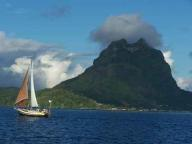
|
|
|

Chique op Bora Bora
» exacte locatie
Het is rond middernacht en ik ga nog even aan dek kijken. De volle maan verlicht de boot en de omgeving. Op de achtergrond is de grillige vorm van Bora Bora te zien. Er staat nauwelijks een zuchtje wind en de temperatuur buiten is als op een mooie zomeravond in Nederland. Het water is hier zo helder dat ik zelfs nu met alleen het maanlicht nog steeds het zand en de stenen op de bodem kan zien. En dan zwemt er een pijlstaartrog over de bodem naar me toe. Heel langzaam met die sierlijke golfbeweging
in zijn lichaam verdwijnt hij onder de boot. Nee, wereldzeilen is niet slecht. Maar verder is Bora Bora vooral bekend vanwege de hotels. Alleen niet op een manier zoals bijvoorbeeld Tenerife met zijn honderden betonblokken vol goedkope toeristen. Op Bora Bora staan een stuk of tien hotels uit de wereldwijde hotel top tweehonderd, dus dat is nogal wat. Alleen voor de echt echt rijken. In het hotel waar wij in de buurt geankerd zijn kun je een traditionele Polynesische hut huren op palen boven het
water vanaf 850 euro per nacht. Omdat er gisteravond in dit hotel een dansshow op het programma stond leek het ons leuk om te proberen wat in de bar te gaan drinken. Het was lang zoeken naar een nette lange broek en een polo zonder olievlekken, maar helemaal achterin de kast lag toch nog wel iets geschikts. We kwamen aan met ons bijbootje bij de steiger van het hotel. Onder water waren felle lampen geplaatst zodat er rondom de steiger een enorme gloed blauw licht te zien was. In het licht zwommen
kleine haaitjes, profiterend van de gunstige jaagomstandigheden. We liepen tussen de hutjes door naar het strand waar groepjes mensen aan mooie houten tafels op het strand zaten te eten. Op de achtergrond in het water lag een traditionele Polynesische catamaran en alles was natuurlijk precies goed uitgelicht. Het totaal zag er fantastisch uit. Terwijl we bij de chique bar met innemende barman een drankje bestelden arriveerden vanaf zee de kano�s al met de Polynesische mannen en vrouwen. We zagen
hoe de mannen met blote handen een twintig meter hoge kokosnootboom beklommen, kokosnoten plukten, de bast met hun tanden wegscheurden, met een ferme slag de noot openden en het water opdronken. Erg indrukwekkend als ik denk aan het gemiddelde van tachtig slagen met de machette dat ik nodig heb om eindelijk die noot te kunnen openen. Verder werd er gedanst en ook mensen uit het publiek werden de vloer op gesleept. Het werd erg grappig toen een beetje een suf uitziend type een poging moest doen om
de stoere dans van de mannen te imiteren terwijl hij van alle kanten omringd werd door sierlijk dansende Polynesische vrouwen. Hij wist niet meer waar hij het zoeken moest en ik was vrij gelukkig dat ik niet gekozen was. Later mocht Ilse ook dansen. Ik had op de boot zonder muziek wel gezien wat ze op de dansschool in Raiatea had geleerd, maar met de drums erbij was ik echt onder de indruk. Terwijl de andere vrouwen matige variaties op westers dansen in de disco probeerden had zij wel de goede moves
en stal ze de show. Na deze luxe gaan we de komende dagen weer een beetje primitiever leven. Morgen vertrekken we uit Frans-Polynesie. De bestemming is nog onbekend. Misschien een van de Cook eilanden of anders direct naar het koninkrijk Tonga.
|
|
|
Fantastic snorkling
» exacte locatie
Gisteren hadden we een heerlijk windje waarmee we naar Bora Bora zijn gezeild. Maar dat konden we volgens meerdere cruisers niet doen zonder te snorkelen in de koraaltuin bij Tahaa. Tahaa is het eilandje boven Raiatea. Les Iles de la Societe lijken nog het meest op een kruising tussen de relatief jonge (en ruigere) Markiezen en de atollen van de Tuamotu's. Groene eilanden omringd door een rif. Raiatea en Tahaa zijn samen omringd door een rif zodat je over lekker vlak water van de een naar de ander
kan varen. In tegenstelling tot de atollen stroomt het in de passen bij deze eilanden nauwelijks. Dit komt doordat er een eiland in het midden ligt en er dus minder water in en uit hoeft bij eb en vloed. Op het rif ontstaan, net als bij een atol, eilandjes. Deze noemen ze motu's. Op de foto zie je vooraan in het midden drie motu's en tussen de grootste en de middelste was de koraaltuin. Tot nu toe was het snorkelen wel leuk, er zwommen altijd wel een paar gekleurde vissen rond maar het koraal zag
er nogal dood uit. En dat terwijl ze in de boeken steeds spraken over 'good snorkeling' of zelfs 'fantastic snorkling'. Waarschijnlijk zijn Joost en ik nogal verwend geraakt doordat we gedoken hebben in de Rode Zee maar ook onze vrienden van de andere boten vonden de Caribische Zee tot nu toe mooier dan de Pacific. Dus als we elkaar vroegen hoe het snorkelen was, was het de 'running joke' om te antwoorden met 'fantastic'. De koraaltuin klonk toch weer veelbelovend en dit keer was het wel echt heel
bijzonder. Alsof je in een aquarium zwom. Overal waar je keek zwommen mooi gekleurde vissen en het koraal was levend en hier en daar rose, paars of wit. Het leuke was dat het een beetje stroomde vanaf de zee tussen de motu's door en je je mee kon laten drijven.
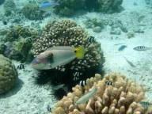
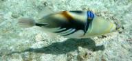
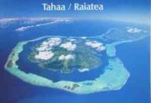
|
|
|
Tamure
» exacte locatie
Tamure is Tahitiaans voor Tahitiaans dansen. Dat wilde ik nog wel een keer zien dus vroeg ik de gastvrije familie van onze polynesische picknick waar dat kon. Een meisje bleek te dansen bij een speciale dansschool hiervoor en daar mochten we wel kijken. Maar dat is pas vrijdag. We liggen sinds zondag heel luxe langszij een gratis steiger midden in het stadje Uturoa. Met een supermarkt op een minuut lopen afstand. Dus voor het ontbijt kunnen we even een vers stokbroodje kopen. In het stadje hing een
poster van de dansschool 'Hula Vahine' met de lestijden en ze hadden ook een cursus voor beginners. Leuk! Ze waren al een paar weken bezig maar ik mocht wel een les meedoen. Dat kon natuurlijk niet in een broek dus leende ze me een pareo die me vakkundig om werd geknoopt. Voor de les begon werden me nog snel snel een paar basismoves bijgebracht. Het dansen gaat helemaal vanuit je heupen en je schouders hou je stil terwijl je met je armen allemaal mooie bewegingen maakt. Gelukkig herhalen ze alle
pasjes vaak maar het ging toch wel snel! 's Middags mocht ik nog een keer komen en ging het al een stuk beter. De Tahitiaanse taal stamt af van de Maori's uit Nieuw Zeeland. Het viel ons al op er zoveel klinkers in alle woorden zitten. Ze maken gebruik van vijf klinkers, a, e, i, o, u en slechts acht medeklinkers, f, h, m, n, p, r, t, v. Alle woorden eindigen op een klinker en elke klinker spreek je apart uit. Het atol Kauehi spreek je uit als Kaa-oe-ee-hie. Sommige worden komen uit het Engels, bijvoorbeeld
'frying pan' is faraipani. Vahine betekent vrouw en hula betekent dans, dus 'Hula Vahine' betekent dansende vrouw. Ik heb zelf een pareo gekocht zodat ik morgen nog een paar lessen kan meedansen, het is zo leuk om te doen!
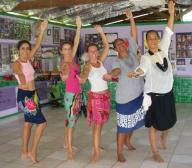
|
|
|
Polynesische picknick
» exacte locatie
We liggen nu voor anker bij een motu (klein eilandje op het rif) bij het eiland Raiatea. Vandaag zijn we de motu overgewandeld om aan de andere kant te gaan snorkelen in de pas. De pas is een doorgang in het rif waar meestal veel vis zit. Een beetje spannend was het wel, want er was toch wel wat branding en het kan hard stromen in passen. Maar we hielden het goed in de gaten en eigenlijk was het makkelijk met praktisch geen stroming. De vissen daar waren weer anders dan we gewend waren, maar de echt
grote jongens hebben we helaas niet gezien. Toen we terugliepen naar ons bijbootje bleek een hele familie zich op het strand te hebben geinstalleerd. We wilden wel even een praatje maken en ik stelde ze een vraag over vissen. Dat doet het altijd goed als gemeenschappelijk gespreksonderwerp. Het gesprek eindigde met "kom terug om twee uur voor het eten". En dat leek ons wel leuk! De familie bleek te bestaan uit drie broers en een zus met al hun kinderen en kleinkinderen. Een paar keer per jaar gingen
ze met z'n allen naar dit eilandje voor eten, drinken en in het water spelen. En de gastvrijheid was echt onbegrensd. We denken dat het de cultuur is, want het ging een beetje hetzelfde als met die twee kopraverzamelaars op Raroia. We kwamen aan en moesten meteen zitten met een bord in de handen waarop in het eerste half uur vier mensen continu probeerden zo veel mogelijk eten te leggen. En het was niet een keer vragen "wil je nog iets?" en dan moet het maar klaar zijn, zoals meer de Nederlandse
stijl is. Nee, alles werd uit de kast getrokken om ons helemaal vol te stoppen. Macaroni, rijst, kippepoot, vis, meer kippepoot, bier, meer macaroni, mango, benetier (schelpdier), meer bier, nog een kippepoot. Weigeren was bijna niet mogelijk en toen we echt niet meer hoefden was het plan dat we eerst maar even op het kleed moesten gaan slapen en dan verder eten. Volgende fase was ga terug naar de boot en kom om vijf uur terug voor meer eten. Uiteindelijk was men dan toch overtuigd dat we genoeg
hadden, maar een zak met twintig mango's kregen we nog wel mee. De baguettes die we ook zeker moesten hebben, konden we nog net daar achterlaten. Wij hadden eigenlijk alleen maar een cake met speculaaskruiden mee en gelukkig bleken de kinderen daar erg dol op te zijn. Verder een beetje wat gepraat in Frans met wat Engels. Geen ingewikkelde onderwerpen dus, maar wel interessant. Wij Nederlanders denken meteen dat we hele interessante gesprekken moeten gaan voeren, maar voor hen is dat echt niet nodig.
Ze hebben al lol met onze paar woorden Frans en ons geklungel om die benetier goed naar binnen te werken. Allemaal heel ontspannen. Maar toch is voor dit soort uitjes een minimale hoeveelheid communicatie wel nodig. Wat dat betreft zijn we hier beter af dan in Zuid Amerika. Ons Spaans was daar eigenlijk te slecht om ook maar iets te beginnen. Goed punt voor het volgende rondje. Grapje mam.
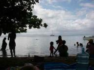
|
|
|
Lekkage in alle smaken
» exacte locatie
Even een korte uitleg van het woord "bilge". Een boot is in principe waterdicht, maar er kan om allerlei redenen toch water binnen komen. Bijvoorbeeld door een grote golf die over de boot slaat terwijl het deurtje van de kajuit open staat. Of door een lekkage boven of onder water. Om dit water makkelijk weer kwijt te raken is op het laagste punt van de boot een lege ruimte gemaakt waar al het water vanzelf naar toe stroomt. Dit heet de bilge. Met behulp van een pomp is de bilge makkelijk leeg te
pompen. Helaas komt er niet alleen schoon water in de bilge terecht, maar ook wel eens motorolie of diesel samen met stof van de vloer. Een smerige mix dus en nooit helemaal weg te pompen. Als je nieuwe bemanning aan boord krijgt is de cocktail "shot from the bilge" de beste ontgroening, zegt men... Maar goed, wij hadden al sinds Panama lekkage op de plek waar de schroefas de boot verlaat. Niet heel schokkend, maar elke week moesten we toch wel de bilge leegpompen. Op Tahiti konden we een nieuwe
afdichting kopen en heb ik, na natuurlijk eerst weer de verkeerde maat te hebben gekocht, dat probleem opgelost. Ik had net de laatste akties uitgevoerd om onze nieuwe putting in gebruik te nemen, toen we geconfronteerd werden met een wc die niet meer wilde doorspoelen. Er zijn veel slangen aan boord, allemaal prima, maar de afvoerslang van de wc wil je heel graag met rust laten. Dat was helaas niet mogelijk en we hebben alles schoon moeten maken. Daarna zijn we vertrokken naar het volgende eiland
Moorea waar we een grote schoonmaak hebben gehouden onder in de boot. Een keer was het bilgewaterniveau door de lekkende schroefas namelijk zo hoog gekomen dat het toplaagje met vieze olie door de vakken met flessen drinken en reservezeilen was gaan zwerven en overal wat achter had gelaten. Bah. Toen alles schoon was zag ik op een bepaalde plek toch steeds weer water verschijnen. Na een kort onderzoek bleek dit geen zout maar zoet water te zijn, afkomstig uit onze watertank. De pomp in de keuken
bleek te lekken. Pomp uit elkaar gehaald en er bleek een plastic ring gebroken te zijn. Net nu we weg zijn uit Papeete, de plek waar veel te koop is. Daarna kwam er een enorme bui en omdat onze buiskap tegenwoordig erg veel scheuren vertoont plensde de regen erdoorheen op het schuifluik. Normaal geen probleem, ware het niet dat een stuk metaal onder het schuifluik volledig is doorgeroest en het water met gemak doorlekt naar binnen en bovendien een hoekje van ons witte plafond groen maakt. Toen waren
we niet blij. De tijd op de Marquesas en Tuamotu's was zo fantastisch. Geen bootproblemen, veel leuke ervaringen en zo'n ongeschonden natuur om ons heen. Terug in de bewoonde wereld met jetski's en auto's, zonder begroeting op straat en met een opstapeling van bootproblemen viel even erg tegen. De dag daarna hebben we helemaal niets met de boot gedaan, maar een wandeling over het eiland gemaakt. En ondanks de absurde hoeveelheid regen die in kleine riviertjes over het pad wegstroomde was het een
goede afwisseling. Terug op de boot hebben we toepasselijk de DVD "Captain Ron" gekeken en was onze positieve kijk weer terug.
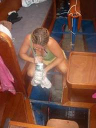
|
|
|
Roggen
» exacte locatie
Gisteren zijn we in een uurtje van Baie de Cook naar Baie d'Opunuhu verhuisd. Alleen op ons voorzeil, lekker makkelijk. Rotor en Muline (Duitse boot, voor het eerst ontmoet op La Gomera) liggen hier ook. Vandaag hadden we wel weer zin in een toertje. Dat gaan we natuurlijk niet boeken zoals de toeristen hier, maar kunnen we zelf met onze bijboot met goed motortje. Dus alle drie de boten met eigen bijbootje, op naar de roggenzandplaat. Dat was toch nog een uurtje varen. Een stuk was erg ondiep maar
het vaargeultje was keurig gemarkeerd met prikken (soort stokken), net als in de Waddenzee. Zo, ankertje uitgegooid en hup, het water in! Joost als eerste en al gauw kwam er een hele school roggen op hem af. Ik was even bang dat ze je gingen knuffelen maar dat viel gelukkig mee, ze zwommen langs ons heen. In het begin vond ik het best eng, het zijn toch pijlstaartroggen. Je moet oppassen dat je niet bovenop ze gaat staan, want dan schrikken ze en kunnen ze hun staart omhoogkrullen en in je voet of
been prikken. Hun gif is dodelijk. Maar het is een prachtgezicht om ze onder water te zien zwemmen. Er zwommen ook nog een paar blacktip-sharks rond. Eentje had een sharksucker onder zich hangen. Dat zijn vissen met een plat hoofd waarop je een soort schoenafdruk ziet. Daarmee kunnen ze zich vastzuigen aan een haai. Heeft de haai wat gegeten dan eet de sharksucker de restjes.
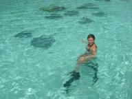
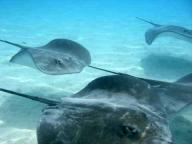
|
|
|
Papeete
» exacte locatie
Het binnenwandelen van de supermarkt blijft een feestje. Inmiddels hebben we goed ingeslagen om leuke dingen te kunnen koken op meer afgelegen plekken. Ondanks al de luxe hebben we weer zin om te gaan. Moorea, het eiland waarop we nu uitzicht hebben, lonkt naar ons. Maar we zijn hier niet zomaar weg.... De man bij wie we moeten uitchecken is maar steeds niet op zijn kantoor. Zowel gisteren als vandaag was hij er niet maar morgen schijnt hij er toch echt te zijn. Op zich niet zo erg, maar je kunt
niet even naar hem toelopen omdat hij in Papeete zelf zit. Wij liggen een stukje verderop voor anker en vlakbij is de bushalte. Die busjes zijn erg leuk, een soort truckje met langs beide zijkanten een lange bank en in het midden nog een smal bankje voor extra zitruimte. De ramen staan standaard open wat een lekker briesje geeft. Stiekum zit je toch snel een half uur in de bus enkele reis en dan is het toch wel jammer dat meneer douane niet op z'n plek zit. Gelukkig hoeven we alleen maar hier in-
en uit te checken voor heel Frans Polynesie. Papeete wordt de hoofdstad van de Zuid Pacific genoemd, een gebied van bijna 10000 kilometer breed. Maar we vinden het niet echt een sfeervolle stad en het is kleiner dan Nijmegen. De terrasjes zitten langs een superdrukke weg (of zijn we dat niet meer gewend?) en er staan niet veel bijzondere gebouwen. Wel een heleboel winkels waar ze dure parels verkopen. De markt is heel leuk, daar staan de kraampjes met vanalles en nog wat, schelpenkettingen, rieten
tassen, vrolijk gebloemde pareo's, groente en fruit en veel tonijnen. Al met al is het een vrolijke boel. De mensen dragen alle kleuren kleding en het liefst met bloemenpatroon. Een bloem achter het oor is ook heel gewoon. Mannen dragen de bloem dicht en vrouwen open en ze geven er ook mee aan of ze een partner hebben. Draag je de bloem links dan ben je bezet en draag je 'm achter je rechteroor dan ben je op zoek. Dat wist ik niet.... Nu snap ik waarom er op Fatu Hiva een van de dansers heel gezellig
met me kwam kletsen en me zelfgebrouwen bier aanbood, ik droeg toen inderaad een bloem achter m'n rechteroor!
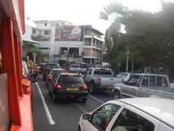
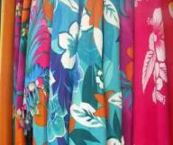
|
|
|
Tahiti
» exacte locatie
Ja, we zijn weer terug in de bewoonde wereld genaamd Tahiti! Tijdens onze eerste wandeling aan land keken we onze ogen uit. Heel veel auto's die over drukke wegen rijden. Een winkelcentrum met overal reclame, veel mensen in normale kleding, electronische gadgets, heerlijk schepijs en een supermarkt waar echt alles te koop is. We praatten de laatste weken regelmatig over eten dat we misten. Ilse vooral de lekkere chocola en mijn favoriet was echte kaas. In deze Carrefour supermarkt was een kaasbalie
van twintig meter lang met zelfs Gouda extra belegen en een speciale chocoladeschap met de meest exotische chocoladerepen. Het was heerlijk om al die luxe weer te ervaren die we sinds Panama, meer dan drie maanden geleden, niet meer hadden gehad. We hebben ook een minder fraaie ontdekking gedaan. Waarschijnlijk heb je als lezer al een vermoeden na een blik op de foto's. Onze mast wordt overeind gehouden door dikke staalkabels. Deze staalkabels zijn verankerd aan stevige lippen op de romp van de boot,
ook wel puttingen genoemd. De putting voor op onze boegspriet houd ik eigenlijk al een half jaar argwanend in de gaten, maar tijdens de tocht naar Tahiti kon ik toch niet meer ontkennen dat er een buiging begon te ontstaan. Eenmaal geankerd ben ik eens wat gaan porren met een schroevendraaier en toen bleek dat de putting al redelijk op weg was richting totaal afscheuren. Als dat was gebeurd hadden we niet meteen de mast verloren, want er is gelukkig nog een extra staalkabel op een andere plek die
in dezelfde richting ondersteuning biedt. Maar het zou wel een behoorlijk circus zijn geworden om een losse staalkabel inclusief loswapperend zeil en oprolsysteem in stevige wind te temmen. Vrijwel zeker met wat schade her en der. Goed, we hebben het dus op tijd gezien en we waren erg blij in Tahiti te liggen waar alle reparaties weer mogelijk zijn. Het moet alleen wel goedkoop, dus we hadden besloten om zelf alles te doen behalve het laswerk. Eigenlijk rekende we al op een heel aantal dagen om alles
rond te krijgen. Materiaal, lasser, ligplaats voor de boot met veel stroom en zonder buren die zeuren over rondvliegende gloeiende metaaldeeltjes die op hun plastic speedboten waaien. Maar toen kwamen we heel toevallig tijdens onze eerste excursie naar de supermarkt de drie Bulgaren tegen die we in Panama ons oude buitenboordmotortje hadden gegeven. En laat een van hen nou net zijn hele boot zelf in elkaar gelast hebben! Eigenlijk waren ze van plan de volgende dag vertrekken, maar voor ons wilden
ze dat nog wel even uitstellen. Dus de volgende dag zijn we vroeg opgestaan om alles te regelen. De ligplek bleek heel makkelijk. Gewoon in de haven vlak bij de ankerplek. Het lag er wel vol met miljoenenjachten, maar zelfs na vijf keer vragen in twee talen bleef het antwoord dat lassen en slijpen geen probleem was. Daarna zijn we met de bus naar het industrieterrein gegaan en daar bleek prachtig RVS op maat gesneden zo te koop te zijn. Nog wat andere spulletjes als slijpschijven en elektrodes geregeld,
de boot verplaatst naar de haven en we konden die middag nog beginnen. We hebben de putting van vier millimeter vervangen door eentje van acht die tevens veel beter verankerd zit op de boegspriet. Zelf heb ik twee afvalstukjes aan elkaar gelast, mijn eerste lasproject! In een dag was het allemaal klaar en liggen we weer vrolijk achter het anker. Nu kunnen we morgen met een gerust hart een terrasje in de hoofdstad Papeete pakken.
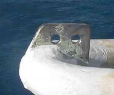
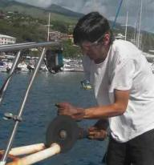
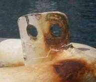
|
|
|

|

|
|
|